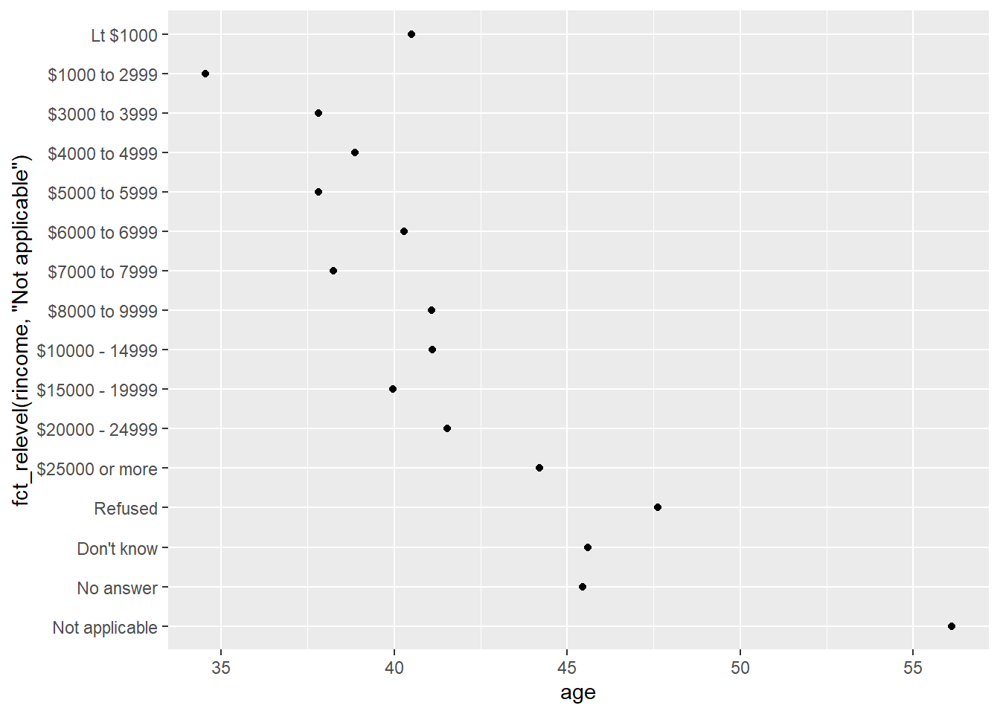

Chapter 6 데이터 랭글링
6.1 readr 패키지
6.1.1 readr 패키지 소개
- tibble로 외부 파일을 불러오거나 저장하는 함수를 제공하는 패키지
| 함수 | 설명 |
|---|---|
| read_csv() | 쉼표로 구분된 파일 불러오기 |
| read_tsv() | 탭으로 구분된 파일 불러오기 |
| read_delim() | 임의의 구분자로 구분된 파일 불러오기 |
| read_table() | 공백으로 구분된 파일 불러오기 |
| read_spss() | spss 데이터 파일 불러오기(haven 패키지) |
| read_sas() | sas 데이터 파일 불러오기(haven 패키지) |
6.1.2 read_csv() 함수
read.csv()함수에 비해 약 10배 정도 빠르며, 좀 더 재현성이 뛰어남- 첫 번째 행은 변수 이름(header)으로 사용
- 매개변수
col_names- 변수명(header)이 없는 경우 사용col_names = FALSE- 변수명을 X1부터 Xn까지 순차적으로 붙여줌col_names = c("x", "y", "z")와 같이 변수명으로 사용할 문자형 벡터를 입력 가능
- 매개변수
skip- 파일의 첫 n행 생략 - 매개변수
na- 특정 값을 결측값으로 지정 - 예제 - StudentSurvey.csv
6.2 dplyr 패키지
6.2.1 dplyr 패키지 소개
- 데이터 가공, 탐색적 자료분석 등에 매우 유용하고 편리한 함수를 제공하는 패키지
- 적용 대상에 따른 dplyr 함수
- 행: filter(), arrange()
- 열: select(), mutate(), rename(), relocate()
- 집단: summarise(), group_by()
- [예제] 2013년 뉴욕시 출발 항공편 데이터셋 flights
| 변수 | 설명 |
|---|---|
| year | 출발 연도 |
| month | 출발 월 |
| day | 출발 일 |
| dep_time | 실제 출발 시간(HHMM 또는 HMM) |
| arr_time | 실제 도착 시간(HHMM 또는 HMM) |
| sched_dep_time | 예정된 출발 시간(HHMM 또는 HMM) |
| sched_arr_time | 예정된 도착 시간(HHMM 또는 HMM) |
| dep_delay | 출발 지연 시간(분) |
| arr_delay | 도착 지연 시간(분) |
| carrier | 항공사 약어 |
| flight | 항공편 번호 |
| tailnum | 비행기 식별 번호 |
| origin | 출발지 |
| dest | 목적지 |
| air_time | 비행 시간(분) |
| distance | 비행 거리(miles) |
| hour | 예정된 출발 시간; 시 |
| minute | 예정된 출발 시간; 분 |
| time_hour | 예정된 비행 날짜 및 시간(POSIXct date) |
6.2.2 행 관련 함수
6.2.2.1 filter() 함수
- 조건에 맞는 행 추출
%in%연산자 - 벡터의 원소가 다른 벡터에 포함되어 있는지 확인
flights %>% filter(arr_delay >= 120) # 120분 이상 연착한 항공편
flights %>% filter(month == 1 & day == 1) # 1월 1일에 출발한 항공편
flights %>% filter(month == 1, day == 1) # 여러 인자는 and로 결합됨
flights %>% filter(month %in% c(3,5,8)) # 3,5,8월에 출발한 항공편6.2.2.2 arrange() 함수
- 특정 변수를 기준으로 행 정렬, 기본값(default)은 오름차순
- 결측값(NA)은 항상 마지막에 정렬됨
- 정렬 기준 변수가 여러 개인 경우 순차적으로 적용
desc()함수 - 내림차순 정렬
flights %>% arrange(year, month, day, dep_time)
filghts %>% arrange(desc(dep_delay)) # 출발 지연 시간이 가장 긴 항공편 확인
flights %>%
filter(dep_delay <= 10 & dep_dalay >= -10) %>% # 대체로 정시에 출발한 항공편 중에서
arrange(desc(arr_delay)) # 도착 지연 시간이 가장 긴 항공편 확인6.2.3 열 관련 함수
6.2.3.1 select() 함수
- 특정 변수 추출
- 추출한 변수 이름을 바꿀 수 있음
- 도우미(helpers) 함수
| 함수 | 설명 |
|---|---|
| starts_with() | 특정 문자열로 시작하는 이름 매칭 |
| ends_with() | 특정 문자열로 끝나는 이름 매칭 |
| contains() | 특정 문자열을 포함하는 이름 매칭 |
| num_range(prefix, range) | 숫자 접미사를 가지는 일련의 이름 매칭 |
flights %>% select(year, month, day) # 출발 연월일 변수 추출
flights %>% select(year:day)
flights %>% select(-(year:day)) # 출발 연월일 변수 제외
flights %>%
select(dep.time = dep_time, arr.time = arr_time) # 변수 이름 변경
flights %>% select(starts_with("sched")) # 변수 이름이 "sched"로 시작하는 경우
flights %>% select(ends_with("time")) # 변수 이름이 "time"으로 끝나는 경우
flights %>% select(contains("arr")) # 변수 이름이 "arr"를 포함하는 경우6.2.3.2 mutate() 함수
- 데이터셋에 존재하는 변수로부터 새로운 변수 생성
- 새로운 변수는 항상 데이터셋 마지막 열에 추가됨
- 매개변수
.before- 새로운 변수를 특정 위치 앞에 추가 - 매개변수
.after- 새로운 변수를 특정 위치 뒤에 추가
- 매개변수
flights %>% mutate(gain = dep_delay - arr_delay) # 출발 지연 - 도착 지연(분)
flights %>% mutate(speed = distance / (air_time/60), .before = 1) # 첫번째 변수 앞에 추가
flights %>% mutate(hour = air_time / 60, .after = air_time) # air_time 변수 뒤에 추가- mutate()와 자주 쓰이는 함수
| 함수 | 설명 |
|---|---|
| row_number() | 행 번호 반환 |
| min_rank() | 순위 부여(동순위 발생 시 건너뜀) |
| dense_rank() | 순위 부여(동순위 발생 시 연속된 값 부여) |
| na_if() | 특정 값을 결측값(NA)으로 변환 |
| coalesce() | 결측값(NA)을 여러 열 중 첫 번째 비결측값으로 변환) |
| if_else() | 단순 조건문(이분법적 분류) |
| case_when() | 여러 개의 조건을 처리 |
| recode() | 특정 값을 새로운 값으로 변환 |
flights %>% mutate(flight_order = row_number()) # 비행기 순서대로 번호 부여
flights %>% mutate(delay_rank = min_rank(dep_delay)) # 출발 지연 시간의 순위(동순위 건너뛰기)
flights %>% mutate(delay_dense = dense_rank(dep_delay)) # 출발 지연 시간의 순위(동순위 연속)
flights %>% mutate(dep_delay_na = na_if(dep_delay, 0)) # 출발 지연 시간이 0이면 NA로 변환
flights %>% mutate(first_non_na = coalesce(dep_delay, arr_delay)) # 출발 지연 시간이 NA인 경우 도착 지연 시간 사용
# 비행 시간이 3시간 이상이면 Long Flight, 아니면 Short Flight로 구분
flights %>% mutate(flight_duration = if_else(air_time >= 180, "Long Flight", "Short Flight"))
# 비행 거리가 500마일 미만이면 Short-haul,
# 500~1500마일 미만이면 Medium-haul,
# 1500마일 이상이면 Long-haul로 구분
flights %>%
mutate(flight_distance = case_when(
distance < 500 ~ "Short-haul",
distance < 1500 ~ "Medium-haul",
TRUE ~ "Long-haul"
))
# 항공사 이름 변경
flights %>%
mutate(carrier_name = recode(carrier,
"AA" = "American Airlines Inc.",
"DL" = "Delta Air Lines Inc."))6.2.4 집단 관련 함수
6.2.4.1 summarise() 함수
- 통계량을 계산하여 하나의 행으로 요약
- 여러 개의 다양한 요약 함수를 사용할 수 있음
| 함수 | 설명 |
|---|---|
| n() | 관측값 개수 |
| n_distinct() | 유일한 값의 개수 |
| sum() | 합계 |
| mean() | 평균 |
| sd() | 표준편차 |
| median() | 중앙값 |
| IQR() | 사분위수범위 |
| min() | 최소값 |
| max() | 최대값 |
| quantile() | 분위수 |
| first() | 첫 번째 값 |
| nth() | n 번째 값 |
| last | 마지막 값 |
flights %>% summarise(mean = mean(air_time, na.rm = TRUE), # 평균
std_dev = sd(air_time, na.rm = TRUE), # 표준편차
n = n()) # 데이터 개수6.2.4.2 group_by() 함수
- 특정 변수를 기준으로 데이터를 그룹화할 수 있음
- 일반적으로 summarise()와 함께 사용하여 각 집단에 대한 요약 통계를 구할 때 활용
- 여러 개의 변수를 기준으로 복합적인 그룹화 가능
ungroup()함수 - 그룹화 해제
flights %>% group_by(month) # 데이터 변화 x, 그룹화되어 있음
flights %>% group_by(month) %>% # 월별 평균 출발 지연 시간, 집단 크기
summarise(delay = mean(dep_delay, na.rm = TRUE), n = n())
flights %>% group_by(year, month, day) %>% summarise(n = n())
flights %>% group_by(month) %>% ungroup() %>% summarise(n = n()) # 그룹화 해제6.2.5 관계형 데이터
6.2.5.1 관계형 데이터 소개
- 관계형 데이터
- 일반적으로 데이터 테이블이 많이 있고, 관심있는 질문에 대답하기 위해 이들을 결합해야 함
- 여러 데이터 테이블을 총칭하여 관계형 데이터라고 함
- [예제] nycflights13 패키지에서 flights와 관련된 4개의 데이터 테이블
## # A tibble: 16 × 2
## carrier name
## <chr> <chr>
## 1 9E Endeavor Air Inc.
## 2 AA American Airlines Inc.
## 3 AS Alaska Airlines Inc.
## 4 B6 JetBlue Airways
## 5 DL Delta Air Lines Inc.
## 6 EV ExpressJet Airlines Inc.
## 7 F9 Frontier Airlines Inc.
## 8 FL AirTran Airways Corporation
## 9 HA Hawaiian Airlines Inc.
## 10 MQ Envoy Air
## 11 OO SkyWest Airlines Inc.
## 12 UA United Air Lines Inc.
## 13 US US Airways Inc.
## 14 VX Virgin America
## 15 WN Southwest Airlines Co.
## 16 YV Mesa Airlines Inc.## # A tibble: 1,458 × 8
## faa name lat lon alt tz dst tzone
## <chr> <chr> <dbl> <dbl> <dbl> <dbl> <chr> <chr>
## 1 04G Lansdowne Airport 41.1 -80.6 1044 -5 A America/New_York
## 2 06A Moton Field Municipal Airport 32.5 -85.7 264 -6 A America/Chicago
## 3 06C Schaumburg Regional 42.0 -88.1 801 -6 A America/Chicago
## 4 06N Randall Airport 41.4 -74.4 523 -5 A America/New_York
## 5 09J Jekyll Island Airport 31.1 -81.4 11 -5 A America/New_York
## 6 0A9 Elizabethton Municipal Airport 36.4 -82.2 1593 -5 A America/New_York
## 7 0G6 Williams County Airport 41.5 -84.5 730 -5 A America/New_York
## 8 0G7 Finger Lakes Regional Airport 42.9 -76.8 492 -5 A America/New_York
## 9 0P2 Shoestring Aviation Airfield 39.8 -76.6 1000 -5 U America/New_York
## 10 0S9 Jefferson County Intl 48.1 -123. 108 -8 A America/Los_Angeles
## # ℹ 1,448 more rows## # A tibble: 3,322 × 9
## tailnum year type manufacturer model engines seats speed engine
## <chr> <int> <chr> <chr> <chr> <int> <int> <int> <chr>
## 1 N10156 2004 Fixed wing multi engine EMBRAER EMB-145XR 2 55 NA Turbo-fan
## 2 N102UW 1998 Fixed wing multi engine AIRBUS INDUSTRIE A320-214 2 182 NA Turbo-fan
## 3 N103US 1999 Fixed wing multi engine AIRBUS INDUSTRIE A320-214 2 182 NA Turbo-fan
## 4 N104UW 1999 Fixed wing multi engine AIRBUS INDUSTRIE A320-214 2 182 NA Turbo-fan
## 5 N10575 2002 Fixed wing multi engine EMBRAER EMB-145LR 2 55 NA Turbo-fan
## 6 N105UW 1999 Fixed wing multi engine AIRBUS INDUSTRIE A320-214 2 182 NA Turbo-fan
## 7 N107US 1999 Fixed wing multi engine AIRBUS INDUSTRIE A320-214 2 182 NA Turbo-fan
## 8 N108UW 1999 Fixed wing multi engine AIRBUS INDUSTRIE A320-214 2 182 NA Turbo-fan
## 9 N109UW 1999 Fixed wing multi engine AIRBUS INDUSTRIE A320-214 2 182 NA Turbo-fan
## 10 N110UW 1999 Fixed wing multi engine AIRBUS INDUSTRIE A320-214 2 182 NA Turbo-fan
## # ℹ 3,312 more rows## # A tibble: 26,115 × 15
## origin year month day hour temp dewp humid wind_dir wind_speed wind_gust precip pressure visib time_hour
## <chr> <int> <int> <int> <int> <dbl> <dbl> <dbl> <dbl> <dbl> <dbl> <dbl> <dbl> <dbl> <dttm>
## 1 EWR 2013 1 1 1 39.0 26.1 59.4 270 10.4 NA 0 1012 10 2013-01-01 01:00:00
## 2 EWR 2013 1 1 2 39.0 27.0 61.6 250 8.06 NA 0 1012. 10 2013-01-01 02:00:00
## 3 EWR 2013 1 1 3 39.0 28.0 64.4 240 11.5 NA 0 1012. 10 2013-01-01 03:00:00
## 4 EWR 2013 1 1 4 39.9 28.0 62.2 250 12.7 NA 0 1012. 10 2013-01-01 04:00:00
## 5 EWR 2013 1 1 5 39.0 28.0 64.4 260 12.7 NA 0 1012. 10 2013-01-01 05:00:00
## 6 EWR 2013 1 1 6 37.9 28.0 67.2 240 11.5 NA 0 1012. 10 2013-01-01 06:00:00
## 7 EWR 2013 1 1 7 39.0 28.0 64.4 240 15.0 NA 0 1012. 10 2013-01-01 07:00:00
## 8 EWR 2013 1 1 8 39.9 28.0 62.2 250 10.4 NA 0 1012. 10 2013-01-01 08:00:00
## 9 EWR 2013 1 1 9 39.9 28.0 62.2 260 15.0 NA 0 1013. 10 2013-01-01 09:00:00
## 10 EWR 2013 1 1 10 41 28.0 59.6 260 13.8 NA 0 1012. 10 2013-01-01 10:00:00
## # ℹ 26,105 more rows
6.2.5.2 키(key)
- 두 테이블을 연결할 때 사용하는 변수로, 관측값을 고유하게 식별하는 역할을 함
- 두 가지 주요 키 유형이 있음:
- 기본키(primary key)
- 한 테이블 내에서 각 관측값을 고유하게 식별하는 변수(또는 변수 집합)
- 예 : planes$tailnum은 planes 테이블에서 각 비행기를 고유하게 구분함
- 외래키(foreign key)
- 다른 테이블의 기본키를 참조하여 두 테이블을 연결하는 변수(또는 변수 집합)
- 예 : flights$tailnum은 flights 테이블에서 각 항공편을 planes 테이블의 비행기와 연결함
- 기본키(primary key)
- 기본키는 반드시 모든 관측값을 유일하게 식별해야 하므로, 실제로 중복이 없는지 확인하는 것이 중요
- 일부 테이블은 명시적으로 기본키가 정의되어 있지 않기도 함
- 일반적으로 기본키와 외래키는 일대다(one-to-many) 관계를 형성함
- 예 : 하나의 비행기(tailnum)는 여러 항공편(flights)에 사용될 수 있음
## # A tibble: 0 × 2
## # ℹ 2 variables: tailnum <chr>, n <int>## # A tibble: 3 × 6
## year month day hour origin n
## <int> <int> <int> <int> <chr> <int>
## 1 2013 11 3 1 EWR 2
## 2 2013 11 3 1 JFK 2
## 3 2013 11 3 1 LGA 26.2.5.3 뮤테이팅 조인(mutating join)
- 관측값을 키로 매칭한 후, 한 테이블의 변수를 다른 테이블에 복사하여 결합함
- 1개의 내부 조인(inner join)과 3개의 외부 조인(outer join) 방식이 있음

| 함수 | 설명 |
|---|---|
| inner_join(x, y) | 키가 일치하는 관측값만 결합(x, y 모두에 존재하는 값만 유지) |
| left_join(x, y) | x의 모든 관측값을 유지하고, 일치하는 y의 값을 결합 |
| right_join(x, y) | y의 모든 관측값을 유지하고, 일치하는 x의 값을 결합 |
| full_join(x, y) | x와 y의 모든 관측값을 유지하고, 가능한 부분은 결합 |

x <- tibble(key = c(1, 2, 3), value_x = c("x1", "x2", "x3"))
y <- tibble(key = c(1, 2, 4), value_y = c("y1", "y2", "x3"))x %>% inner_join(y, by = "key") # inner join
x %>% left_join(y, by = "key") # left join
x %>% right_join(y, by = "key") # right join
x %>% full_join(y, by = "key") # full join## flights 데이터셋 일부 추출
flights2 <- flights %>%
select(year:day, hour, origin, dest, tailnum, carrier)
## by = NULL (기본값) : 두 테이블에 있는 모든 변수를 사용하여 조인(natural join)
flights2 %>% left_join(weather)
## by = "x" : 일부 공통 변수 x만 사용하여 조인
# flights와 planes에는 year 변수가 있지만 서로 다른 의미이므로, tailnum 변수로만 조인
# year 변수는 접미사가 붙어 출력에서 헷갈리지 않음
flights2 %>% left_join(planes, by = "tailnum")
## by = c("a" = b") : 테이블 x의 a 변수와 테이블 y의 b 변수를 매칭
flights2 %>% left_join(airports, by = c("dest" = "faa"))
flights2 %>% left_join(airports, by = c("origin" = "faa"))6.2.5.4 필터링 조인(filtering join)
- 뮤테이팅 조인처럼 키를 기준으로 관측값을 매칭하지만, 변수를 결합하지 않고 관측값 자체를 필터링함
- 매칭 여부만 중요하며, 어떤 관측값이 매칭되었는지는 중요하지 않음
| 함수 | 설명 |
|---|---|
| semi_join(x, y) | x의 관측값 중 y와 키가 일치하는 값만 유지(결합 ×) |
| anti_join(x, y) | x의 관측값 중 y와 키가 일치하지 않는 값만 반환(결합 ×) |
# 가장 인기있는 상위 10개 도착지
top_dest <- flights %>% count(dest, sort = TRUE) %>% head(10)
# 목적지 중 한 곳으로 운행한 항공편 필터링
flights %>% semi_join(top_dest)
# 여객기에 매칭되지 않는 항공편 필터링
flights %>% anti_join(planes, by = "tailnum") %>% count(tailnum, sort = TRUE)6.3 tidyr 패키지
6.3.1 wide format과 long format
- wide format
- 사람이 읽기 좋은 데이터 구조
- 통계학에서 다루는 데이터 테이블 구조와 동일한 개념
- 각 행은 관측 단위(사람, 가구 등)를 나타내며, 각 열은 관측 단위에 대한 측정값(키, 몸무게 등)으로 표현된 형태
- long format
- 컴퓨터가 이해하기 편한 데이터 구조
- 각 행은 wide format에서 특정 셀의 정보를 반영하며, 각 열은 요인(factor)으로 표현된 형태
- wide format보다 유연하여 데이터 추가 및 삭제가 용이함
- [예제] WHO에서 발표한 1999~2000년 3개 국가(아프가니스탄, 브라질, 중국)의 결핵 사례 수
- 동일한 데이터셋을 다양한 format으로 보여줌
## # A tibble: 6 × 4
## country year cases population
## <chr> <dbl> <dbl> <dbl>
## 1 Afghanistan 1999 745 19987071
## 2 Afghanistan 2000 2666 20595360
## 3 Brazil 1999 37737 172006362
## 4 Brazil 2000 80488 174504898
## 5 China 1999 212258 1272915272
## 6 China 2000 213766 1280428583## # A tibble: 12 × 4
## country year type count
## <chr> <dbl> <chr> <dbl>
## 1 Afghanistan 1999 cases 745
## 2 Afghanistan 1999 population 19987071
## 3 Afghanistan 2000 cases 2666
## 4 Afghanistan 2000 population 20595360
## 5 Brazil 1999 cases 37737
## 6 Brazil 1999 population 172006362
## 7 Brazil 2000 cases 80488
## 8 Brazil 2000 population 174504898
## 9 China 1999 cases 212258
## 10 China 1999 population 1272915272
## 11 China 2000 cases 213766
## 12 China 2000 population 1280428583## # A tibble: 6 × 3
## country year rate
## <chr> <dbl> <chr>
## 1 Afghanistan 1999 745/19987071
## 2 Afghanistan 2000 2666/20595360
## 3 Brazil 1999 37737/172006362
## 4 Brazil 2000 80488/174504898
## 5 China 1999 212258/1272915272
## 6 China 2000 213766/1280428583## # A tibble: 3 × 3
## country `1999` `2000`
## <chr> <dbl> <dbl>
## 1 Afghanistan 745 2666
## 2 Brazil 37737 80488
## 3 China 212258 213766## # A tibble: 3 × 3
## country `1999` `2000`
## <chr> <dbl> <dbl>
## 1 Afghanistan 19987071 20595360
## 2 Brazil 172006362 174504898
## 3 China 1272915272 1280428583## # A tibble: 6 × 4
## country century year rate
## <chr> <chr> <chr> <chr>
## 1 Afghanistan 19 99 745/19987071
## 2 Afghanistan 20 00 2666/20595360
## 3 Brazil 19 99 37737/172006362
## 4 Brazil 20 00 80488/174504898
## 5 China 19 99 212258/1272915272
## 6 China 20 00 213766/12804285836.3.2 long format으로 변환
- wide format을 long format으로 변환 -
pivot_longer()함수(권장)- 행의 개수를 늘리고 열의 개수를 줄여서 데이터셋을 길게 만듬
- long format으로 변환하고자 하는 열을 지정하는 방법은
dplyr::select()함수와 동일 - [참고]
gather(),reshape2::melt()함수
## long format 변환1
table4a %>%
pivot_longer(c(`1999`, `2000`), names_to = "year", values_to = "cases") %>%
mutate(year = parse_integer(year)) # year 변수를 정수형으로 변경## # A tibble: 6 × 3
## country year cases
## <chr> <int> <dbl>
## 1 Afghanistan 1999 745
## 2 Afghanistan 2000 2666
## 3 Brazil 1999 37737
## 4 Brazil 2000 80488
## 5 China 1999 212258
## 6 China 2000 213766## long format 변환2
table4b %>%
pivot_longer(c(`1999`, `2000`), names_to = "year", values_to = "population") %>%
mutate(year = parse_integer(year)) # year 변수를 정수형으로 변경## # A tibble: 6 × 3
## country year population
## <chr> <int> <dbl>
## 1 Afghanistan 1999 19987071
## 2 Afghanistan 2000 20595360
## 3 Brazil 1999 172006362
## 4 Brazil 2000 174504898
## 5 China 1999 1272915272
## 6 China 2000 1280428583## long format 변환3
relig_income %>%
pivot_longer(-religion, names_to = "income", values_to = "count")
## long format 변환4
billboard %>%
pivot_longer(cols = starts_with("wk"), # dplyr::select()의 helpers 함수 사용
names_to = "week",
names_prefix = "wk",
values_to = "rank",
values_drop_na = TRUE) # 결측값(NA) 제거6.3.3 wide format으로 변환
- long format을 wide format으로 변환 -
pivot_wider()함수(권장)- 관측값이 여러 행에 흩어져 있을 때 사용
- [참고]
spread(),reshape2::dcast()함수
## wide format 변환1
table2 %>%
pivot_wider(names_from = type,
values_from = count) %>% # type에 대한 wide format
mutate(rate = cases/population*100000) %>% # 인구 10만 명당 결핵 건수
pivot_wider(names_from = year, # year에 대한 wide format
values_from = c(cases, population, rate)) %>%
relocate(country, contains("1999")) # 변수 위치 변경## # A tibble: 3 × 7
## country cases_1999 population_1999 rate_1999 cases_2000 population_2000 rate_2000
## <chr> <dbl> <dbl> <dbl> <dbl> <dbl> <dbl>
## 1 Afghanistan 745 19987071 3.73 2666 20595360 12.9
## 2 Brazil 37737 172006362 21.9 80488 174504898 46.1
## 3 China 212258 1272915272 16.7 213766 1280428583 16.7## wide format 변환2
fish_encounters %>%
pivot_wider(names_from = station,
values_from = seen,
values_fill = 0) # 결측값(NA)은 0으로 대체6.3.4 열의 분리 및 결합
- 하나의 열에 저장되어 있는 여러 개의 변수를 분리 -
separate()함수 - 여러 개의 열을 하나의 열로 결합 -
unite()함수
## # A tibble: 6 × 4
## country year cases population
## <chr> <dbl> <chr> <chr>
## 1 Afghanistan 1999 745 19987071
## 2 Afghanistan 2000 2666 20595360
## 3 Brazil 1999 37737 172006362
## 4 Brazil 2000 80488 174504898
## 5 China 1999 212258 1272915272
## 6 China 2000 213766 1280428583## 열의 결합
table5 %>%
unite(col = new_year, century, year, sep = "") %>%
mutate(new_year = parse_integer(new_year)) # new_year 변수를 정수형으로 변경## # A tibble: 6 × 3
## country new_year rate
## <chr> <int> <chr>
## 1 Afghanistan 1999 745/19987071
## 2 Afghanistan 2000 2666/20595360
## 3 Brazil 1999 37737/172006362
## 4 Brazil 2000 80488/174504898
## 5 China 1999 212258/1272915272
## 6 China 2000 213766/12804285836.3.5 결측값(missing value) 처리
- 결측값
NA은 누락된 값(not available)을 나타냄 - 결측값은 알 수 없으므로, 전염성(contagious)을 가짐
- 결측값에 대한 산술연산, 비교연산 결과도 알 수 없음(NA)
- 결측값 확인 -
is.na()함수
NA + 10
NA / 2
NA > 5
10 == NA
# Let x be Mary's age. We don't know how old she is.
# Let y be John's age. We don't know how old he is.
# Are Mary and John the same age?
# We don't know!
NA == NA
is.na(NA)- 명시적 결측값(explicitly missing value) -
NA로 표시된 값 - 암묵적 결측값(implicitly missing value) - 데이터셋에 존재하지 않는 값
# 2015년 4분기 수익은 NA로 표시되어 있으므로, 명시적 결측값임
# 2016년 1분기 수익은 데이터셋이 존재하지 않으므로, 암묵적 결측값임
stocks <- tibble(
year = c(2015, 2015, 2015, 2015, 2016, 2016, 2016),
qtr = c( 1, 2, 3, 4, 2, 3, 4),
return = c(1.88, 0.59, 0.35, NA, 0.92, 0.17, 2.66))
stocks %>%
pivot_wider(names_from = year, # year를 열로 pivot하여 명시적으로 만듬
values_from = return) %>%
pivot_longer(cols = c(`2015`, `2016`), # 명시적 결측값이 중요하지 않다면
names_to = "year", # 암묵적으로 만듬(NA 제거)
values_to = "return",
values_drop_na = TRUE)| 함수 | 설명 |
|---|---|
| complete() | 지정한 열의 모든 고유 조합을 생성한 후, 필요한 경우 결측값을 명시적으로 추가 |
| fill() | 결측값을 가장 최근에 존재하는 값(이월된 마지막 관측값)으로 대체 |
| drop_na() | 결측값이 포함된 행 제거 |
| replace_na() | 결측값을 사용자가 지정한 값으로 대체 |
## complete() 예제
stocks %>% complete(year, qtr)
## fill() 예제
tibble(person = c("Derrick Whitmore", NA, NA, "Katherine Burke"),
treatment = c(1, 2, 3, 1), response = c(7, 10, 9, 4)) %>%
fill(person)
## drop_na() 예제
mytbl <- tibble(x = c(1, 2, NA), y = c("a", NA, "b"))
mytbl %>% drop_na(x) # x 변수에서 결측값이 있는 행 제거
mytbl %>% drop_na() # 모든 변수에 대해 결측값이 있는 행 제거
## replace_na() 예제
# 데이터 프레임에 있는 결측값을 대체하는 경우, 매개변수 replace는 list로 입력
# x 변수의 결측값은 0, y 변수의 결측값은 "unknown"으로 대체
mytbl %>% replace_na(list(x = 0, y = "unknown"))
# 벡터에 있는 결측값을 대체하는 경우, 매개변수 replace는 단일 값(single value)으로 입력
mytbl$x %>% replace_na(0)
mytbl$y %>% replace_na("unknown")
mytbl %>% mutate(x = replace_na(x, 0), y = replace_na(y, "unknown"))6.4 stringr 패키지
6.4.2 문자열 기초
6.4.2.1 str_length() 함수
- 문자열에서 문자의 개수(길이) 확인
## Example 1
library(stringr)
str_length(c("a", "R for data science", NA))
## Example 2
# dplyr::count() 함수 - 변수의 고유값별로 관측값 개수를 계산
# 매개변수 wt - 기본값은 NULL로 집단별 관측값 개수(행의 개수) 산출,
# 가중 변수를 입력하면 집단별 합계 산출(가중합)
library(babynames)
babynames%>%
count(length = str_length(name), wt = n) # 이름 길이의 분포
babynames %>%
filter(str_length(name) == 15) %>% # 가장 긴 이름 찾기
count(name, wt = n, sort = TRUE)6.4.2.2 str_sub() 함수
- 문자열에서 특정 위치의 문자 추출
- 매개변수
start,end도 포함되기 때문에 반환되는 문자열의 길이는 end - start + 1임
## Example 1
x <- c("Apple", "Banana", "Pear")
str_sub(x, 1, 3) # 1번째 문자부터 3번째 문자까지 추출
str_sub(x, -3, -1) # 끝에서 3번째 문자부터 마지막 문자까지 추출
str_sub("a", 1, 5) # 문자열이 너무 짧을 때도 에러는 발생하지 않음!
## Example 2
babynames %>%
mutate(first = str_sub(name, 1, 1), # 이름의 첫번째 문자 추출
last = str_sub(name, -1, -1)) # 이름의 마지막 문자 추출6.4.3 데이터에서 문자열 생성
6.4.3.1 str_c() 함수
- 두 개 이상의 문자 벡터를 원소별로 결합하여 하나의 문자형 벡터(single character vector) 생성
- 매개변수
sep- 각 원소를 결합할 때 사용할 구분자 - 매개변수
collapse- 전체 벡터를 하나의 문자열로 합칠 때 사용할 구분자 - 결측값(NA)이 포함된 경우 해당 결과도 NA로 반환됨
dplyr::mutate()함수와 함께 사용하면 열 단위 문자열 생성이 가능함
## Example 1
str_c("Letter: ", letters)
str_c("Letter", letters, sep = ": ")
str_c(letters, " is for", "...")
str_c(letters[-26], " comes before ", letters[-1])
## Example 2
# 단일 문자열(single string)로 결합
str_c(letters, collapse = "")
str_c(letters, collapse = ", ")
## Example 3
# 결측값(NA)이 있는 경우
x <- c("a", NA, "b")
str_c(x, "-d")
str_c(str_replace_na(x), "-d") # 결측값을 "NA" 그대로 출력
## Example 4
# dplyr::mutate()와 함께 사용
info <- tibble(name = c("Kim", "Lee", "Park"))
info %>% mutate(greeting = str_c("Hi, ", name, "!"))6.4.3.2 str_glue() 함수
- 고정 문자열과 변수를 직관적으로 결합할 수 있도록 지원
- 반복적인
""사용 없이 가독성이 높은 코드 작성 가능 {}안에 작성한 표현식은 문자열 외부처럼 평가되어 값으로 치환됨
## Example 1
name <- "Park"
str_glue("Hello, {name}!")
str_glue("2 + 2 = {2 + 2}")
str_glue("Today is {toupper('monday')}.")
## Example 2
# 특수문자 \n가 없어도 자연스럽게 줄바꿈을 포함
name <- "Kim"
str_glue("Hello, {name}!
Welcome to the team.")
## Example 3
# 결측값(NA)이 있으면 지정한 문자열로 대체
names <- c("Kim", NA, "Park")
str_glue("Hi, {names}!", .na = "Friend")
## Example 4
info <- tibble(name = c("Kim", "Lee", "Park"))
info %>% mutate(greeting = str_glue("Hi, {name}!"))6.4.3.3 str_glue_data() 함수
str_glue()함수와 유사하지만, 데이터프레임을 명시적으로 참조하여 문자열을 생성str_glue()함수보다 더 빠르고 메모리 효율적이며, 벡터화된 처리로 대규모 데이터 처리에 적합dplyr::mutate()함수와 함께 사용하면 열(column) 값을 활용한 문자열 결합에 매우 유용함
## Example 1
info <- tibble(name = c("Kim", "Lee", "Park"),
age = c(25, 30, 42),
city = c("Seoul", "Jeonbuk", "Gwangju"))
str_glue_data(info, "{name} is {age} years old and lives in {city}.")
## Example 2
info2 <- tibble(name = c("Kim", NA, "Park"),
age = c(25, 30, NA),
city = c("Seoul", "Jeonbuk", "Gwangju"))
str_glue_data(info2, "{name} lives in {city}.", .na = "Unknown")
## Example 3
info <- tibble(name = c("Kim", "Lee", "Park"),
age = c(25, 30, 42),
city = c("Seoul", "Jeonbuk", "Gwangju"))
info %>%
mutate(message = str_glue_data(info, "{name} ({age} years old) lives in {city}."))6.4.3.4 str_flatten() 함수
- 문자 벡터의 각 원소를 하나의 문자열로 결합
dplyr::summarise()함수와 함께 사용하면 집단별 문자열 요약에 활용 가능- 매개변수
collapse- 전체 벡터를 하나의 문자열로 합칠 때 사용할 구분자 - 매개변수
last- 마지막 원소 앞에 사용할 접속어
## Example 1
str_flatten(c("x", "y", "z"))
str_flatten(c("x", "y", "z"), collapse = ", ")
str_flatten(c("x", "y", "z"), collapse = ", ", last = ", and ")
## Example 2
mytbl <- tibble(name = c("Carmen", "Carmen", "Marvin", "Terence", "Terence", "Terence"),
fruit = c("banana", "apple", "nectarine", "cantaloupe", "papaya", "madarine"))
mytbl %>%
group_by(name) %>%
summarize(fruits = str_flatten(fruit, ", "))6.4.4 정규 표현식을 이용한 패턴 매칭
6.4.4.1 정규 표현식(regular expression; regex, regexp)
- 문자열의 규칙(패턴)을 표현하는 특수한 언어
- 일정한 규칙을 만족하는 문자열을 탐색하거나 추출, 변경하는 데 사용
- 특정 패턴을 나타내기 위해 사용하는 특수 기호를 메타 문자(meta character)라고 함
str_view()함수 - 정규 표현식이 문자 벡터에 어떻게 매칭되는지 시각적으로 보여줌
| 표현식 | 설명 |
|---|---|
| . | 어떤 문자 한 개와 일치(줄 바꿈 제외) |
| ^ | ^ 뒤의 표현식이 문자열의 시작과 일치 |
| $ | $ 앞의 표현식이 문자열의 끝과 일치 |
| ? | ? 앞의 표현식이 0번 또는 1번(0 or 1) 일치 |
| + | + 앞의 표현식이 1번 이상(1 or more) 반복되어 일치 |
| * | * 앞의 표현식이 0번 이상(0 or more) 반복되어 일치 |
| () | 표현식을 하나의 집단으로 묶음 |
## 기초 매칭
x <- c("apple", "banana", "pear")
str_view(x, "an") # "an"을 포함하는 문자열
str_view(x, ".a.") # "a"가 중간에 있는 문자열## 앵커(anchor) - 문자열 내 특정 위치(시작 또는 끝) 지정
x <- c("apple", "banana", "pear")
str_view(x, "^a") # "a"로 시작하는 문자열
str_view(x, "a$") # "a"로 끝나는 문자열
str_view(c("abc", ""), "^$") # 빈 문자열{}을 사용하여 매칭 횟수를 정확하게 제어 가능{n}- 정확히 n회 매칭{n,}- n회 이상 매칭{n,m}- n회 이상 m회 이하 매칭
## 반복
x <- "1888 is the longest year in Roman numerals: MDCCCLXXXVIII"
str_view(x, "CC?") # 두번째 "C"가 0번 또는 1번 반복 → C, CC
str_view(x, "CC+") # 두번째 "C"가 1번 이상 반복 → CC, CCC, CCCC, ...
str_view(x, "CC*") # 두번째 "C"가 0번 이상 반복 → C, CC, CCC, CCCC, ...
str_view(x, "C{2}") # "C"가 정확히 2번 반복 → CC
str_view(x, "C{2,}") # "C"가 2번 이상 반복 → CC, CCC, CCCC, ...
str_view(x, "C{2,3}") # "C"가 2번 이상 3번 이하 반복 → CC, CCC
str_view(c("color", "colour"), "colou?r")## 그룹화
str_view(c("gray", "grey"), "gr(a|e)y")
str_view(c("summarize", "summarise"), "summari(z|s)e")- 정규 표현식에서 특수 동작이 아닌 기호 자체로 사용하기 위해서는 그 앞에
\사용- 작은 따옴표
\' - 큰 따옴표
\" - 백슬래시
\\\\ - 점(dot)
\\.
- 작은 따옴표
[]을 사용하여 문자 집합(character class)과 매칭[abcd]- “a”, “b”, “c”, “d” 중 하나 이상과 매칭[^abcd]- “a”, “b”, “c”, “d”를 제외한 문자와 매칭
- 자주 사용되는 문자 클래스(character class)
\d- 임의의 숫자와 매칭\s- 임의의 여백 문자(whitespace; 공백, 탭, 줄 바꿈)와 매칭
names <- c("Hadley", "Mine", "Garrett")
str_view_all(names, "[aeiou]") # 모음과 매칭
str_view_all(names, "[^aeiou]") # 자음과 매칭
str_view_all(names, "[^aeiou]+") # 자음이 1개 이상 반복되는 부분과 매칭
# [^aeiou]는 각 자음 문자를 개별적으로 매칭하지만,
# [^aeiou]+는 다음이 연속되는 부분을 하나의 매칭으로 처리
text <- "The total cost is 29 dollars\nand 99 cents."
writeLines(text)
str_view_all(text, "\\d") # 숫자(0~9)와 매칭
str_view_all(text, "\\s") # 여백 문자(공백, 줄 바꿈)와 매칭6.4.4.2 str_detect() 함수
- 문자열에 특정 패턴이 존재하는지 확인
- 패턴이 일치하면 TRUE 반환
- 정규 표현식을 사용하여 다양한 조건 지정 가능
str_subset()- 패턴이 일치하는 문자열 벡터를 반환dplyr::filter()와 함께 사용하면 조건에 맞는 행 선택 가능
## Example 1
str_detect(c("apple", "banana", "pear"), "e")
## Example 2
sum(str_detect(words, "^t")) # "t"로 시작하는 단어의 개수
str_subset(words, "^t") # "t"로 시작하는 단어
mean(str_detect(words, "[aeiou]$")) # 모음으로 끝나는 단어의 비율
## Example 3
# "x"로 끝나는 이름
babynames %>% filter(str_detect(name, "x"))
# 연도별로 "x"로 끝나는 고유한 이름의 비율
babynames %>%
group_by(year) %>%
summarise(prop_x = mean(str_detect(name, "x$")))6.4.4.3 str_count() 함수
str_detect()함수의 변형으로, 문자열 내에서 일치하는 패턴의 개수 계산dplyr::mutate()와 함께 사용하면 열 단위로 패턴의 빈도를 구할 수 있음
## Example 1
str_count(c("apple", "banana", "pear"), "p")
## Example 2
babynames %>%
count(name) %>%
mutate(vowels = str_count(name, "[aeiou]"), # 모음 개수
consonants = str_count(name, "[^aeiou]")) # 자음 개수6.4.4.4 str_extract(), str_extract_all() 함수
- 문자열에서 일치하는 텍스트를 추출
## 문장 데이터에서 색상 텍스트 추출
head(sentences)
color <- c("red", "orange", "yellow", "green", "blue", "purple")
color_match <- str_c(color, collapse = "|") # 색상 벡터를 하나의 정규 표현식으로 변환
has_color <- str_subset(sentences, color_match) # 색상을 포함하는 문장 추출
matches <- str_extract(has_color, color_match) # 일치하는 텍스트 추출
# str_extract() 함수는 처음 일치하는 패턴만 추출
more <- sentences[str_count(sentences, color_match) > 1]
str_view(more, color_match)
str_extract(more, color_match)
# str_extract_all() 함수는 모든 일치하는 패턴을 추출 → 리스트 반환
str_extract_all(more, color_match)
str_extract_all(more, color_match, simplify = TRUE) # 행렬로 반환 가능6.4.4.5 str_replace(), str_replace_all() 함수
- 일치하는 패턴을 새 문자열로 변경
## Example 1
# 모음을 - 기호로 변경
x <- c("apple", "pear", "banana")
str_replace(x, "[aeiou]", "-") # 처음 일치하는 패턴만 변경
str_replace_all(x, "[aeiou]", "-") # 모든 일치하는 패턴을 변경
## Example 2
# 벡터를 이용하여 여러 패턴을 한 번에 변경 가능(multiple replacement)
x <- c("1 house", "2 cars", "3 people")
str_replace_all(x, c("1" = "one", "2" = "two", "3" = "three"))6.4.4.6 str_split() 함수
- 문자열을 일정한 기준(패턴 또는 경계)으로 나누어 분할
- 각 문자열마다 조각 수가 다르므로, 결과는 리스트로 반환됨
- 매개변수
simplify = TRUE- 가장 긴 조각 수에 맞춰 확장하여 행렬로 반환 boundary함수를 사용하여 문자(character), 줄(line_break), 문장(sentence), 단어(word)를 경계로 분할 가능
## Example 1
sentences %>% head(5) %>% str_split(" ")
sentences %>% head(5) %>% str_split(" ", simplify = TRUE)
## Example 2
x <- "This is a sentence. This is another sentence."
str_view(x, boundary("word"))
str_view(x, boundary("sentence"))
str_view(x, boundary("line_break"))
str_view(x, boundary("character"))6.5 forcats 패키지
6.5.1 forcats 패키지 소개
- 팩터(factor)를 다루는 함수를 제공하는 패키지
- 팩터는 범주형 변수에 사용하는 데이터 객체로, 문자형보다 다루기 더 쉬움
- 범주형 변수는 가질 수 있는 값이 미리 고정되고 알려져 있음
- 문자형 벡터를 알파벳순이 아닌 순서로 표현하고 싶을 때 유용
- [예제] 종합사회조사(General Social Survey) 데이터셋 gss_cat
- 시카고 대학교 독립연구기관 NORC에서 장기간 수행한 General Social Survey의 샘플 데이터
| 변수 | 설명 |
|---|---|
| year | 조사 연도, 2000~2014년(2년 주기) |
| marital | 결혼 상태 |
| age | 연령 |
| race | 인종 |
| rincome | 소득 |
| partyid | 정치 성향 |
| relig | 종교 |
| denom | 교파 |
| tvhours | 하루 TV 시청 시간 |
6.5.2 팩터 수준(levels) 재정렬
| 함수 | 설명 |
|---|---|
| fct_inorder() | 데이터에 나타난 순서대로 팩터 수준을 재정렬 |
| fct_infreq() | 빈도가 높은 수준부터 순서대로 재정렬 |
| fct_inseq() | 수준을 숫자로 변환 가능한 경우, 작은 수부터 재정렬 |
| fct_rev() | 팩터 수준의 순서를 반대로 뒤집어 재정렬 |
## fct_inorder(), fct_infreq() 예제
fct1 <- factor(c("b", "b", "a", "c", "c", "c"))
fct_inorder(fct1) # Levels: b a c
fct_infreq(fct1) # Levels: c b a
## inseq() 예제
fct2 <- factor(1:3, levels = c("2", "3", "1"))
fct_inseq(fct2) # Levels : 1 2 3
## inrev() 예제
fct_rev(fct1) # Levels : c b a
fct_rev(fct2) # Levels : 1 3 2
## Excample
# fct_infreq(), fct_rev() 함수를 조합하여 marital 수준을 빈도 기준으로 내림차순 정렬
gss_cat %>%
mutate(marital = marital %>% fct_infreq() %>% fct_rev()) %>%
ggplot(aes(marital)) + geom_bar()| 함수 | 설명 |
|---|---|
| fct_reorder() | 특정 변수를 기준으로 팩터 수준을 재정렬 |
| fct_relevel() | 지정한 수준을 앞쪽(처음)으로 이동하여 재정렬 |
## fct_reorder() 예제
# 결혼 상태에 따른 하루 평균 TV 시청 시간
summary1 <- gss_cat %>%
group_by(marital) %>%
summarise(tvhours = mean(tvhours, na.rm = TRUE),
n = n()) %>%
mutate(marital = fct_reorder(marital, tvhours))
## [그래프를 통한 확인]
# 하루 평균 TV 시청 시간을 기준으로 marital 수준이 재정렬됨
library(ggplot2)
ggplot(summary1, aes(tvhours, marital)) +
geom_bar(stat = "identity")## fct_relevel() 예제
# 소득에 따른 평균 연령
summary2 <- gss_cat %>%
group_by(rincome) %>%
summarise(age = mean(age, na.rm = TRUE), n = n())
## [그래프를 통한 확인]
# reorder() 함수를 사용하면 어떤 소득 집단이 평균 연령이 가장 높고 낮은지 파악하기 쉬우나,
# rincome 변수는 순서형 변수(ordinal variable)이기 때문에 이는 바람직하지 않음
# relevel() 함수를 사용하여 "Not applicable" 수준을 앞쪽(처음)으로 이동할 수 있음
#ggplot(summary2, aes(age, fct_reorder(rincome, age))) + geom_point()
ggplot(summary2, aes(age, fct_relevel(rincome, "Not applicable"))) + geom_point()
6.5.3 팩터 수준(levels) 변경
| 함수 | 설명 |
|---|---|
| fct_recode() | - 명시적으로 언급되지 않은 수준은 그대로 유지됨 - 여러 수준을 하나로 묶으려면 동일한 새 수준에 할당 ※ 주의: 서로 다른 범주를 잘못 묶으면 결과가 왜곡될 수 있음 |
| fct_collapse() | - 여러 수준을 하나의 집단으로 병합 - 새 수준에 대해 기존 수준들의 벡터를 지정 |
| fct_lump() | - 상대적으로 빈도가 낮은 수준을 묶어 "Other"로 병합 - 매개변수 n - "Other"를 제외한 수준의 개수 설정 - 매개변수 prop - "Other"로 묶을 수준의 전체 비중 기준을 설정 |
## fct_recode() 예제1
gss_cat %>%
mutate(partyid = fct_recode(partyid,
"Republican, strong" = "Strong republican",
"Republican, weak" = "Not str republican",
"Independent, near rep" = "Ind,near rep",
"Independent, near dem" = "Ind,near dem",
"Democrat, weak" = "Not str democrat",
"Democrat, strong" = "Strong democrat")) %>%
count(partyid)
## fct_recode() 예제2
gss_cat %>%
mutate(partyid = fct_recode(partyid,
"Republican, strong" = "Strong republican",
"Republican, weak" = "Not str republican",
"Independent, near rep" = "Ind,near rep",
"Independent, near dem" = "Ind,near dem",
"Democrat, weak" = "Not str democrat",
"Democrat, strong" = "Strong democrat",
"Other" = "No answer",
"Other" = "Don't know",
"Other" = "Other party")) %>%
count(partyid)
## fct_collapse() 예제1
gss_cat %>%
mutate(partyid = fct_collapse(partyid,
other = c("No answer", "Don't know", "Other party"),
rep = c("Strong republican", "Not str republican"),
ind = c("Ind,near rep", "Independent", "Ind,near dem"),
dem = c("Not str democrat", "Strong democrat"))) %>%
count(partyid)
## fct_lump() 예제1
gss_cat %>%
mutate(relig = fct_lump(relig)) %>%
count(relig)
## fct_lump() 예제2
gss_cat %>%
mutate(relig = fct_lump(relig, n = 10)) %>%
count(relig, sort = TRUE) %>%
print(n = Inf)
## fct_lump() 예제3
gss_cat %>%
mutate(relig = fct_lump(relig, prop = 0.05)) %>%
count(relig, sort = TRUE) %>%
print(n = Inf)6.6 lubridate 패키지
6.6.1 lubridate 패키지 소개
- 날짜, 시간을 다루는 함수를 제공하는 패키지
- 핵심
tidyverse에 포함되지 않으므로 별도로 불러와야 함 - 시간 정보만 다루고 싶을 때는
hms패키지를 사용
6.6.2 날짜/시간 생성
6.6.2.1 날짜/시간 유형
| 유형 | 설명 |
|---|---|
| date | - 날짜를 나타내며, tibble에서 <date>로 출력 |
| time | - 하루 중 시간을 나타내며, tibble에서 <time>로 출력 |
| date-time | - 날짜와 시간을 나타내며, tibble에서 <dttm>로 출력 - 시점을 고유하게 식별 |
6.6.2.2 문자열(string)로부터 생성
- 문자열에서 연(year), 월(month), 일(day)의 순서를 파악한 후, “y”, “m”, “d”를 그 순서대로 함수 이름에 사용
date-time을 생성하려면 함수 이름에_와 “h”, “m”, “s” 중 하나 이상을 추가함
library(lubridate)
ymd("2025-03-02")
mdy("March 2nd, 2025")
dmy("02-Mar-2025")
ymd_hms("2025-03-02 12:34:59")
mdy_hm("03/31/2025 18:30")6.6.2.3 개별 구성요소로부터 생성
- 날짜/시간의 개별 구성요소들이 여러 열(변수)에 저장되어 있는 경우
make_date(),make_datetime()함수 사용
library(nycflights13)
## Example 1
# 예정된 출발 일시를 date-time 형식으로 생성
flights %>%
select(year, month, day, hour, minute) %>%
mutate(departure = make_datetime(year, month, day, hour, minute))
## Example2
# 예정된 도착 일시, 실제 출발 일시, 실제 도착 일시를 date-time 형식으로 생성
# → sched_arr_time, dep_time, arr_time은 HHMM 또는 HMM 형식으로 되어 있어,
# 시(hour)와 분(minute)을 각각 분리하여 추출해야 함
make_datetime_100 <- function(year, month, day, time) {
make_datetime(year, month, day, time %/% 100, time %% 100)
}
flights_dt <- flights %>%
filter(!is.na(dep_time), !is.na(arr_time)) %>%
mutate(dep_time = make_datetime_100(year, month, day, dep_time),
arr_time = make_datetime_100(year, month, day, arr_time),
sched_dep_time = make_datetime_100(year, month, day, sched_dep_time),
sched_arr_time = make_datetime_100(year, month, day, sched_arr_time)) %>%
select(origin, dest, ends_with("delay"), ends_with("time"))6.6.3 날짜/시간 구성요소
| 함수 | 설명 |
|---|---|
| year() | 연도(year) 추출 |
| month() | 월(month) 추출 |
| week() | 주(week) 추출 |
| day() | 일(day) 추출 |
| hour() | 시(hour) 추출 |
| minute() | 분(minute) 추출 |
| second() | 초(second) 추출 |
| yday() | 해당 연도의 몇 번째 일(day)인지 반환 |
| mday() | 해당 월의 몇 번째 일(day)인지 반환 |
| wday() | 해당 주의 무슨 요일(1=일요일, 7=토요일)인지 반환 |
month(),wday()함수 관련 매개변수- 매개변수
label- TRUE이면 문자열, FALSE이면 숫자로 표시 - 매개변수
abbr- FALSE이면 이름 전체 반환(label이 FALSE인 경우 무시)
- 매개변수
datetime <- ymd_hms("2025-05-19 12:34:56")
year(datetime)
month(datetime)
month(datetime, label = TRUE)
day(datetime)
hour(datetime)
minute(datetime)
second(datetime)
yday(datetime)
mday(datetime)
wday(datetime)
wday(datetime, label = TRUE, abbr = FALSE)6.6.4 시간 범위(time spans)
6.6.4.1 시간 범위 유형
| 유형 | 설명 |
|---|---|
| duration | 초(second) 단위의 정확한 시간 길이를 나타냄 |
| period | 주(week), 월(month) 등 사람의 단위(human units)로 표현함 |
| interval | 시작 시점과 종료 시점을 나타냄 |
6.6.4.2 duration
date에 뺄셈을 적용하면difftime이 생성되며, 이는 초(second), 분(minute), 시(hour), 일(day) 또는 주(week) 단위로 시간 범위를 기록하므로 작업이 어려움- 이를 보완하기 위한
duration은 항상 초(second) 단위를 사용하여 시간 범위를 나타냄- 1분 = 60초, 1시간 = 3600초(60분), 1일 = 86400초(24시간), 1주일 = 604800초(7일)
duration은 덧셈, 뺄셈, 곱셈 연산이 가능함- 윤년, 일광 절약 시간제(daylight saving time) 같은 규칙의 영향을 받기 때문에 시간(hour), 월(month), 연(year)과 같은 큰 시간 단위로 측정한 값에 대해 연산 결과가 실제와 항상 일치하지 않을 수 있음
- [참고] 일광 절약 시간제 - 하절기에 표준시를 원래 시간보다 한 시간 앞당긴 시간을 쓰는 제도로, 미국과 캐나다에서는 각 시간대의 지역 시간을 기준으로 3월 두 번째 주 일요일 오전 2시부터 11월 첫 번째 주 일요일 오전 2시까지에 적용됨
## Example 1
# duration 생성
dday <- today() - ymd(20250302)
as.duration(dday)
dseconds(15)
dminutes(10)
dhours(c(12, 24))
ddays(0:5)
dweeks(3)
dmonths(1:6)
dyears(1)
## Example 2
# 덧셈, 뺄셈, 곱셈 연산
dyears(1) + dweeks(12) + dhours(15)
2 * dyears(1)
tomorrow <- today() + ddays(1)
last_year <- today() - dyears(1)
## Example 3
# 일광 절약 시간제
one_pm <- ymd_hms("2025-03-08 13:00:00", tz = "America/New_York")
one_pm # "2025-03-08 13:00:00 EST"
one_pm + ddays(1) # "2025-03-09 14:00:00 EDT"6.6.4.3 period
- 지정된 시간 단위로
period생성 - 사람이 인식하는 단위를 사용하므로, 작동 방식이 더 직관적임
## Example 1
# period 생성
seconds(15)
minutes(10)
hours(c(12, 24))
days(0:5)
weeks(3)
months(1:6)
years(1)
## Example 2
# 덧셈, 뺄셈, 곱셈 연산
10 * (months(6) + days(1))
days(50) + hours(25) + minutes(2)
## Example 3
# 윤년
ymd("2024-01-01") + dyears(1)
ymd("2024-01-01") + years(1)
## Example 4
# 일광 절약 시간제
one_pm <- ymd_hms("2025-03-08 13:00:00", tz = "America/New_York")
one_pm # "2025-03-08 13:00:00 EST"
one_pm + days(1) # "2025-03-09 13:00:00 EDT"
## Example 5
# 자정 이후 도착한 항공편(심야 항공편)의 도착 일시에 하루(days(1))를 더해 정확한 시점을 보정
flights_dt %>%
filter(arr_time < dep_time)
flights_dt <- flights_dt %>%
mutate(overnight = arr_time < dep_time,
arr_time = arr_time + days(overnight * 1),
sched_arr_time = sched_arr_time + days(overnight * 1))
flights_dt %>%
filter(overnight, arr_time < dep_time)6.6.4.4 interval
interval은 시작 시점과 종료 시점을 나타내며, 정확한 시간 범위를 확인할 수 있음interval생성 -ineterval()함수,%--%연산자duration과의 나눗셈 연산을 통해interval기간을 확인할 수 있음
## Example 1
# interval 생성
next_year <- today() + years(1)
interval(start = today(), end = next_year) # today() %--% next_year
## Example 2
# interval 기간 확인
years(1) / days(1) # 365.25
dyears(1) / ddays(1) # 365
(today() %--% next_year) / ddays(1) # 365
(ymd("2024-01-01") %--% ymd("2025-01-01")) / ddays(1) # 366(윤년)